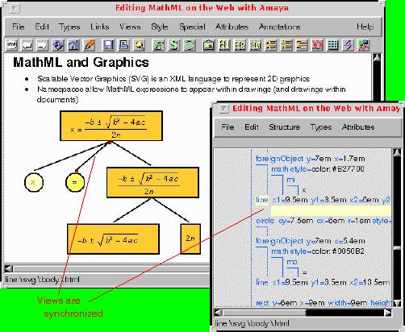

Work on Amaya is being managed as part of W3C's User Interface domain.
Activity statements provide a managerial overview of W3C's work in this area. They are designed to be read from beginning to end, to be informative and interesting. The role of W3C is given, also the benefits to the Web community, accomplishments to date and a summary of what the future holds. Background reading pages to help set the scene and explain any technical concepts are in preparation. Where necessary these also contain a short tutorial.
Amaya is W3C's own versatile editor/browser. With the extremely fast moving nature of Web technology, Amaya plays a central role at the Consortium. Easily extended to integrate new ideas into its design, Amaya provides developers with many specialized features including multiple views, where the internal structural model of the document can be displayed alongside the browser's view of how it should be presented on the screen. Amaya has a counterpart called Jigsaw which plays a similar role on the server side. Amaya is a complete web browsing and authoring environment and comes equipped with a WYSIWYG style of interface, similar to that of the more popular commercial browsers.
Amaya maintains a consistent internal document model adhering to the Document Type Definition (DTD), meaning that it handles the relationships between various document components: paragraphs, headings, lists and so on, as laid down in the relevant W3C HTML Recommendation. Amaya has been extended to demonstrate many features in HTML 4.0, the current recommendation for the language.
Amaya has been developed at W3C by the Amaya team: Irène Vatton, Ramzi Guétari, José Kahan, Vincent Quint, Daniel Veillard. Used by other groups within the consortium to demonstrate work and to act as an experimental platform Amaya has played an important role in the areas of:
Math on the Web: Amaya demonstrates an implementation of MathML which allows users to browse and edit web pages containing mathematical expressions. The screen below shows the way that you can display equations on the screen side by side the MathML model used by Amaya.

HTTP protocol: In its basic version, Amaya implements many web protocols and formats: it accesses remote sites by means of HTTP 1.1, as implemented in libwww. Amaya takes advantage of the most advanced features of HTTP, such as content negotiation to retrieve, for instance, the most appropriate picture format, keep alive connections to save bandwidth and authentication to allow secured remote publishing.
Graphics: Amaya displays images in the PNG format, which is a more powerful graphics format than GIF and more suited to the needs of the Web. A CGM plug-in developed by Rutherford Appleton Laboratories was first demonstrated at EITC'97 in Brussels and in many other events. We made an experimental implementation of Scalable Vector Graphics (SVG) in Amaya. The graphics are written in XML and may be mixed freely with HTML and with MathML. CSS style sheets may be used to alter the look of the graphics.
Style sheets: Amaya has extensive support for the W3C style sheet language CSS and offers a simple-to-use interface enabling users to write style sheets for Web documents without having to know the details of the syntax associated with style sheet rules and properties. You can create colored text, change the font, set the background color and control other presentational effects.
HTML 4: As an editor, Amaya is guaranteed to produce HTML 4 compliant code. The way it handles documents is strictly according to the HTML DTD, the Document Type Definition.
DOM: Amaya is used to experiment with the Java API developed by the Document Object Model (DOM) activity.
Amaya in other languages: It is now possible to launch Amaya so that the user dialogs are in German or French. The intention is to cover other languages in the future.
The Amaya software is available for both Windows and Unix platforms and can be downloaded from the W3C site. It is available both in source code and in ready to use forms. The new version 2.0 of Amaya is available since the end of April. This new version of Amaya has a number of new features including:
A secured authentication protocol: This protocol, called message digest authentication (see HTTP/1.1 specification), avoids sending a user's password in an unencrypted form.
The lost update checking: Amaya is able to enter into dialog with the server (Apache and Jigsaw) to notify the user when pages they want to publish have been updated by another user. This can be seen as the first step toward a cooperative authoring tool.
XHTML support: Amaya is able to generate XHTML documents according to the latest draft.
New CSS features: With Amaya, users can download, edit and publish CSS files as well as HTML pages. Amaya also provides menu entries to link and to unlink external style sheets to/from HTML documents.
Documentation is provided at every level, catering for the beginner right through to the developer wanting to extend the software for their own purposes. There is also an active and very useful mailing list where users can discuss Amaya features and how they work, making note of any problems experienced using the software.
The publicly released version is written in C. There is also a version with Java support, not publicly available at the moment. This experimental version embeds a Java virtual machine and uses the HTTP classes from Jigsaw, the object-oriented server for HTTP 1.1 written in Java and provides a DOM Java API.
Amaya CVS base is now publicly available at http://dev.w3.org. It has world read-only access. Depending on the response and on the quality of contributions, we may open a write access to other people afterwards.
Beyond this, the Amaya team will be working on:
The team will continue to work with other W3C activities to help demonstrate and test new developments in a variety of areas.

Last modified $Date$